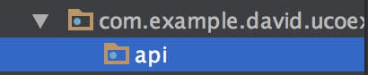

Usando una API externa
Qué es una API
Una API es una Interfaz de Programación de Aplicaciones (Application Programming Interface). Básicamente, una API es un servidor que gracias a unos métodos en su código, nos va a proveer de datos para nuestro uso.
En nuestro caso, y debido a su simplicidad, vamos a hacer una aplicación que pida datos a una API sobre perros, con la que montaremos un listado y un perfil para el perro.
Nuestra API es dogapi.
Conexión con la API
Para empezar, debemos añadir las dependencias de Retrofit, que es la librería que vamos a usar para la conexión con nuestra API. Retrofit es un cliente HTTP hecho para Java y Android.
build.gradle (Module: app)
compile "com.squareup.retrofit2:retrofit:2.3.0"
compile "com.squareup.retrofit2:converter-gson:2.3.0"
Cuando introducimos código en Gradle, tenemos que volver a sincronizar el código para que los cambios sean efectivos.
Ahora creamos un nuevo Package llamado API.

Antes de Retrofit
Tenemos que crear nuestro modelo de datos, que nos servirá para recoger la información del servidor.
Creamos un Package llamado entities y dentro de él un archivo BreedWrapper.java
public class BreedWrapper {
@SerializedName("message")
private List<String> breeds;
public List<String> getBreeds() {
return breeds;
}
}
Configurando Retrofit
Cuando trabajamos con Retrofit, debemos tener dos archivos básicos. Uno de ellos es una interfaz donde definiremos todos los métodos que usaremos para conectarnos a la API (por ejemplo traer todas las razas de perros o información acerca de una).
El otro es el cliente, que nos servirá para configurar nuestra conexión con la API y todo lo que le queramos añadir a Retrofit (por ejemplo un Interceptor). Aquí también instanciamos la interfaz para que podamos usar los métodos en nuestro código.
Creamos nuestra interfaz. La vamos a llamar DogService.java.
public interface DogService {
@GET("breeds/list")
Call<BreedWrapper> getBreeds();
}
Con DogService.java estamos creando un "puente" entre nuestra app y la API. Cuando queramos traer todas las razas de perro, solamente tendremos que instanciar esa interfaz y usar el método.
Ahora vamos a crear el cliente, DogClient.java
public class DogClient {
private Retrofit retrofit;
private final static String BASE_URL = "https://dog.ceo/api/";
public DogClient(){
this.retrofit = new Retrofit.Builder()
.baseUrl(BASE_URL)
.addConverterFactory(GsonConverterFactory.create())
.build();
}
public DogService getDogService(){
return this.retrofit.create(DogService.class);
}
}
El cliente, nos sirve para hacer la conexión. Tenemos la url básica de la api https://dog.ceo/api/ a la que concatenaremos los métodos que querremos usar. Además, debemos crear una instancia de Retrofit en nuestro constructor, indicándole la URL base y que queremos que GSON convierta los objetos JSON a objetos de Java.
Por último, declaramos un método que nos dará una instancia del servicio, con el que podremos llamar a nuestra API.